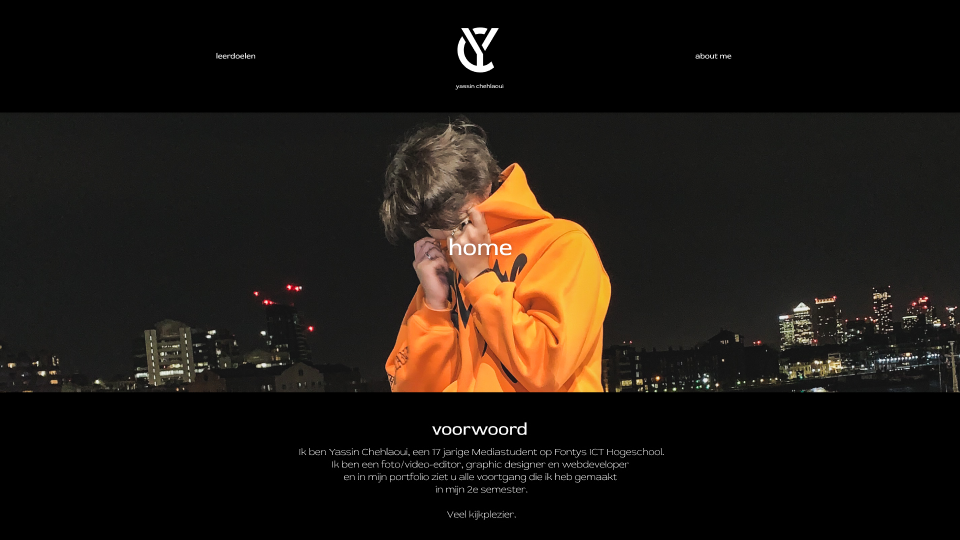

portfolio website
Aanpak
Als het gaat om development dan ben ik nog niet een erg bevorderde student. In semester 1 heb ik geleerd hoe ik websites moet bouwen met HTML & CSS en in dit semester wil ik deze vaardigheid natuurlijk uitbreiden. Mijn portfolio bouwen is een goede start. Na mijn portfolio opzet gedesigned te hebben in Figma, ben ik begonnen met alles om te zetten naar code. Het design kan je hieronder bekijken.
Code
U kunt op deze GitLab link klikken om de code van deze website te bekijken. De front-page is nogal eenvoudig als het gaat om code, ik heb een simpele navigatie bar gemaakt met 2 navigatieknoppen en 1 home-knop wat mijn logo is. Daar heb ik een oranje hoverkleur bij toegevoegd als accentkleur, dit had ik gekregen aan feedback van Evert. Buiten dat heb ik een foto van mijzelf toegevoegd als banner, en na feedback van Evert en Sebastiaan gekregen te hebben heb ik ook de "home" tekst weggelaten. Hieronder heb ik een quote toegevoegd van een van mijn favoriete artiesten, dit was ook een stukje feedback wat ik heb meegenomen in mijn website van Evert want hier stond eerst een voorwoord en dat was te "school presentatie-achtig". Als laatst heb ik een copyright regel toegevoegd aan de onderkant van alle pagina's.
Voor de leerdoelen pagina heb ik 6 foto's geplaatst in een grid die een hover overlay hebben waarop staat welk leerdoel je kan bekijken. Op al deze foto's heb ik links toegevoegd die leiden naar de projecten binnen het leerdoel. Deze foto's wil ik wel nog vervangen met mijn eigen foto's, dit was ook een feedbackpuntje om op te letten.
Voor de inhoud van elke leerdoel heb ik de projecten op een eenvoudige, maar overzichtelijke manier onder elkaar gezet met een korte uitleg per project en eenvoudige knopjes om de projecten te bekijken.
Feedback
Bij mijn 2e portfolio review kreeg ik van Lisette te horen dat ik heel veel index files heb, en dat
hoort niet dus dat heb ik aangepast. Ook kreeg ik de tip om bij mijn leerdoelen pagina de hele foto
klikbaar te maken in plaats van alleen de tekst, dus dit heb ik ook aangepast.
Bij mijn 3e portfolio review was de enigste feedback qua development van mijn portfolio, dat het
navigeren soms wat doolhof-achtig was, dit heb ik ook aangepast doormiddel van een dropdown menu.
© 2022 Yassin Chehlaoui